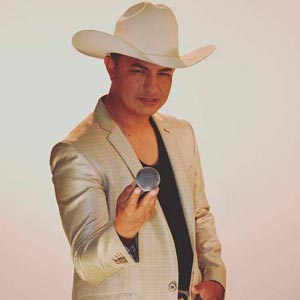

Directorio de Artistas
Aida Luz Villa
{kind=link}
Alan Ramírez
{kind=link}
Albeiro Urazán
{kind=link}
Amanda Patricia
 |
Amanda Patricia, “La voz de la música popular” estrena su más reciente sencillo –La que se va soy yo-, que tiene gran proyección para ser uno de los éxitos del 2017. El video fue grabado en la ciudad de Medellín. |
Ancizar
{kind=link}
Baby Maturana
{kind=link}
Café y Anís Orquesta
{kind=link}
Danny Moreno
{kind=link}
El Cóndor del Oriente
 |
“Con Dios y el pueblo”. Robinson Ospina, “El cóndor del oriente”, inicia el 2017 con el lanzamiento de “Se tragó de mi”, un sencillo que conquistará a todos los seguidores de la música popular. “El cóndor del oriente”, tuvo gran acogida con el público colombiano con sus éxitos “Tan llena de nada” y “El whatsapp”. |
El Cuate Romántico
|  | Pablo Andrés Daza Silva, “El cuate romántico” o como le dicen de cariño sus admiradoras “El policía romántico”, hace parte de la gloriosa Policía Nacional de nuestro país y llega en este 2.017 con su primer trabajo discográfico llamado “Modo tragado”, en una firme decisión tomada en el año 2.016 por escribir e interpretar su propio sentimiento, el cual lo proyecta como uno de los cantantes más románticos de la música popular en Colombia, por su estilo sentimental de componer y cantar. |
{kind=link}
El Joey
{kind=link}
Fabio Gómez
{kind=link}
Fanny Ospina
{kind=link}
Fernando Gil
{kind=link}
Fredy García
{kind=link}
Guayaba Orquesta
 |
Guayaba Orquesta, conocida como “La universidad del crossover”, llega con su más reciente éxito totalmente inédito –No te voy a detener-. Guayaba, cuenta con 17 años de trayectoria convirtiéndose en una de las orquestas más importantes del país. |
Héctor Javier
{kind=link}
Jhon Castillo
{kind=link}
Jhon Sebastián
{kind=link}
John Yara
 |
John Yara, cantante y compositor colombiano, nació en el departamento de Tolima y quien en su trayectoria ha logrado la aceptación total del público y nos demuestra que cuando está en tarima se lo goza al máximo. –Tú que pensabas” es su primer sencillo, que con su talentosa voz conquistó corazones. Jonh Yara ahora presenta “Que caro estoy pagando”, autoría de Sergio Mercado, un sencillo que se está posicionando como el éxito del año. |
Juan Carlos Ensamble
{kind=link}
Juan Palau
{kind=link}
Julián López
 |
Julián López, inició su camino musical, con temas como –Te pido perdón-, que le permitió ser reconocido como una de las jóvenes figuras con más futuro, del Eje Cafetero. Ahora, Julián López lanza su gran boom del 2017, –Borracho-, compuesto por él mismo y con la producción de Freddy Montoya, más conocido como “El pisco”. |
Karina Shalá
{kind=link}
Karval
{kind=link}
Lalo Bravo
{kind=link}
Las Ingratas
 |
Se han consolidado como el mejor grupo de Tecnocarrilera femenino gracias a su exitosa carrera musical. Las Ingratas, de la mano del reconocido director y productor musical, Albeiro Sáenz, lanzan su tema inédito “Llorarás por mí” de la autoría de Lalo Bravo, proyectándose cómo éxito popular. |
Leonardo Ospina
{kind=link}
Loren, “La voz angelical”
{kind=link}
Los Bacanes del Sur
{kind=link}
Los Hermanos Medina
 |
Desde Popayán – Cauca, llega la agrupación tropical número 1 de la región pacífica, Los Hermanos Medina, que está conformada por el padre y sus hijos, y presentan su más reciente éxito “Estado civil: Amantes”, después de sus éxitos “Somos prohibidos” y “Quédate con él”, que superó los 6 millones de views en YouTube. |
Los Inquietos
{kind=link}
Luis Miguel Fuentes
 |
Con una trayectoria musical de más de 20 años, Luis Miguel Fuentes, presenta su más reciente sencillo “Te perdono”, un trabajo discográfico que se destaca por su romanticismo vallenato. Este artista tiene una excelente acogida por el público por su estilo romántico y parrandero. |
Luisito Muñoz
 |
El reconocido cantante de música popular, Luisito Muñoz, se encuentra promocionando su más reciente sencillo “Ángel o demonio” un trabajo que realizó al lado de Fredy Montoya, luego de su éxito “Amor ilegal”. |
Marcos “El bohemio”
 |
El artista bogotano, Marcos “El bohemio”, además de cantar, se inspira para escribir y ha obtenido canciones como –Suerte es que te digo-, incluido en su reciente trabajo musical, titulado “La voz del sentimiento popular”. Marcos “El bohemio”, lanza su nuevo sencillo –El culpable-, espera seguir compartiendo tarima con grandes artistas como Luis Alberto Posada y Marco Solís, entre otros. |
Mauricio Ceballos
 |
Mauricio Ceballos, “La voz del sentimiento popular” con canciones como “La traicionera” y “Ella me hizo malo” llega en este 2017 con “Me pego mis tragos”, una canción que ocupa los primeros lugares a nivel nacional. Además, Mauricio Ceballos suma un éxito más en su carrera musical “Los dos la quisimos” tema que comparte con Yeison Jiménez. Contacto: |
Mauricio Uribe
{kind=link}
Mau G
{kind=link}
Miguel Vaquero
{kind=link}
Noztra
{kind=link}
Olider Montana
 |
“Sin fortuna”, es el más reciente trabajo discográfico de Olider Montana. El video que fue grabado en San Luís, Tolima, y ya tiene más de 12 mil visualizaciones en el canal de YouTube. |
Orlando López
{kind=link}
Panche de oro
 |
“El panche de oro“, cantante y compositor, nacido en Chaparral, Tolima ha grabado 4 CD, “Soldado bohemio”, “El fruto de mis esfuerzos”, “El mujeriego” y “Alterado” y “contagioso” y ahora nos presenta su nueva producción discográfica “Hechicero”, una gran combinación, corridos alterados y un estilo muy contagioso en el género popular. |
PYEM
{kind=link}
El Rey Lancheros
{kind=link}
Romulito “El andariego”
 |
Romulito “El andariego”, guitarrista, compositor, cantante y músico del maestro Rómulo Caicedo. Romulito “El andariego”, presenta en este 2017, su éxito –La mamá de los pollitos-, un tema que ha dado de que hablar en el mundo del género popular.
|
Sebastián “El coyote”
{kind=link}
Stokoff
{kind=link}
Taxi Orquesta
{kind=link}
Víctor Manuel Ampudia
 |
Llegó el nuevo estilo de la música popular, Víctor Manuel Ampudia y su éxito “Una noche más”, que seguramente dará de qué hablar en el país. Comparte su tema –Una noche más-, en YouTube. “Esa es“. |
Wilmar “El León”
{kind=link}
Yiyo Bohórquez
 |
Oriundo de Santa Sofía – Boyacá. Cantante, compositor e intérprete del acordeón; desde muy niño su inclinación por el vallenato ha llegado a miles de seguidores con canciones como “Entrégame tu amor”, ahora presenta su nuevo éxito “Insistir en tu amor”. |